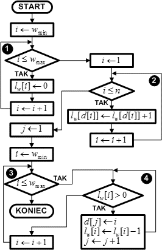

Sortowanie to polega ne tym, że algorytm:
1. Dzieli przedział liczbowy na podprzedziały (kubełki)
2. Przypisuje liczby z sortowanej tablicy do odpowiednich kubełków
3. Sortuje liczby w niepustych kubełkach

SZCZEGÓŁOWY OPIS ALGORYTMU
I. Określamy zakres wartości, jakie mogą przyjmować elementy sortowanego zbioru.
II. Dla każdej możliwej wartości przygotowujemy kubełek-licznik, który będzie zliczał ilość wystąpień tej wartości w sortowanym zbiorze. Liczba liczników jest równa (wmax - wmin + 1). Każdy licznik jest początkowo ustawiony na wartość zero.
III. Przeglądamy kolejno elementy zbioru od pierwszego do ostatniego. Dla każdego elementu zbioru zwiększamy o jeden zawartość licznika o numerze równym wartości elementu. Na przykład, jeśli kolejny element zbioru ma wartość 3, to zwiększamy licznik o numerze 3. W efekcie po przeglądnięciu wszystkich elementów zbioru liczniki będą zawierały ilość wystąpień każdej z możliwych wartości. Jeśli dany licznik zawiera 0, to wartość równa numerowi licznika w zbiorze nie występuje. Inaczej wartość ta występuje tyle razy, ile wynosi zawartość jej licznika.
IV. Przeglądamy kolejne liczniki zapisując do zbioru wynikowego ich numery tyle razy, ile wynosi ich zawartość. Zbiór wyjściowy będzie posortowany.